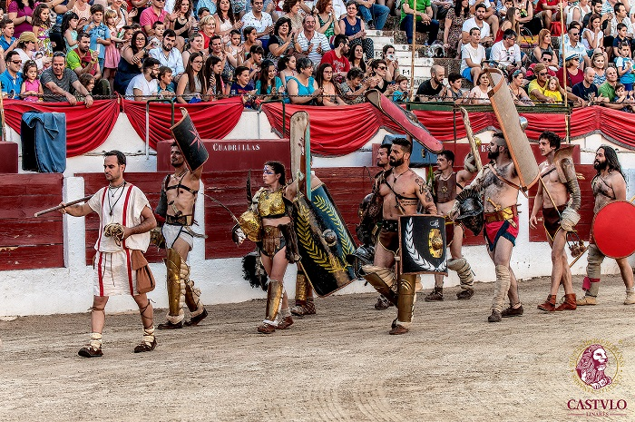
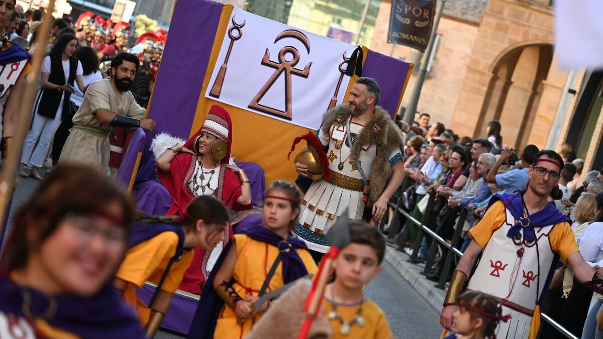
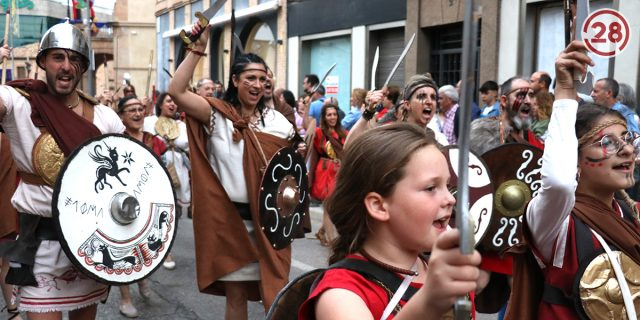
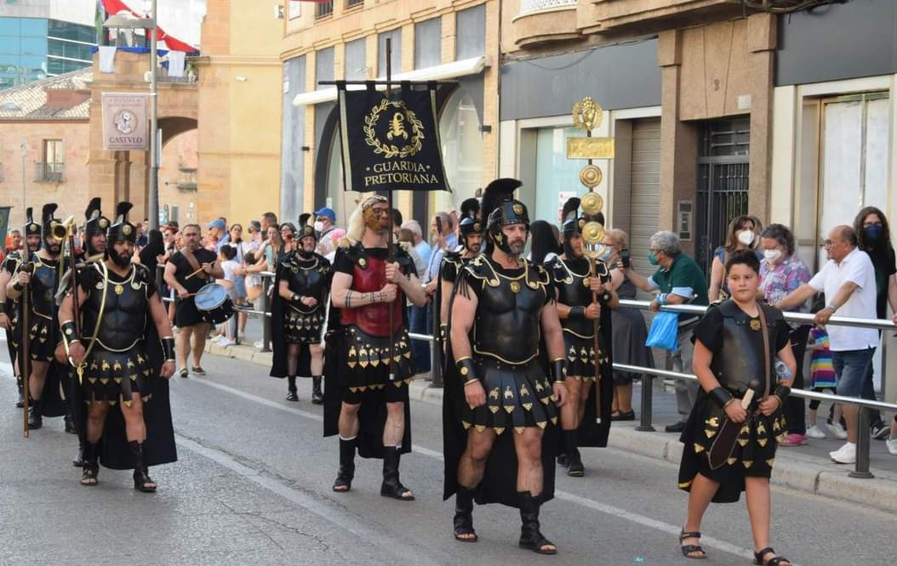

GRAN CIRCVS MAXIMVS, EL ESPECTÁCULO QUE CAUTIVÓ AL MUNDO
La historia nos habla de muchedumbres enardecidas presenciando el ritual de la vida y de la muerte en las arenas del Coliseo: gladiadores batiéndose ferozmente mientras su vida depende de un simple gesto del emperador. Carreras de cuadrigas donde todo vale con tal de ganar, salto del aro de fuego, lucha de gladiadores y muchas más pruebas emocionantes.
Las Fiestas Ibero-Romanas de Cástulo retoman el esplendor de aquellos días en su espectáculo. Desde la Plaza de Toros de Linares el público será transportado a un auténtico Circo Romano, con una recreación fiel, disfruta de una cuidadísima ambientación y caracterización, además del realismo de un espectáculo único.
Por motivos de seguridad y para disfrutar de la manera más segura y agradable del espectáculo del Gran Circvs Maximvs se han establecido una seria de normas que se deberán de tener en cuenta a la hora de acceder a la Plaza de Toros:

DESFILE TRIUNFAL DE LAS CULTURAS IBERAS, ROMANAS Y CARTAGINESAS DE CÁSTULO
El Desfile Oficial de Tropas y Legiones recorrerá durante las Fiestas de Cástulo las calles más céntricas de la ciudad de Linares, que durante estos días cambiarán de nombre para acoger a cada uno de los clanes y culturas. Un acontecimiento realizado con la participación de la propia población de Linares, que cada edición se siente más unida e involucrada a la celebración de estas Fiestas, y la colaboración de profesionales y recreadores históricos venidos de diferentes puntos de España. El Desfile Triunfal, una de las actividades más esperadas tanto por participantes como por el público en general, es un espectáculo lleno de música, percusión y carrozas que recorren el centro de Linares.
¿Quieres formar parte? Tú también puedes ser protagonista en esta edición de las Fiestas Ibero Romanas de Cástulo. No pierdas la oportunidad y conviértete en un romano, íbero o cartaginés creando tu propia vestimenta, asistiendo a talleres formativos y siendo parte de las culturas de Cástulo.



C/ Iglesia, 5 - 23700 Linares (Jaén)
(+34) 953 10 01 83
ENLACES DE INTERÉS
Aviso Legal
Política de Privacidad
Política de Cookies